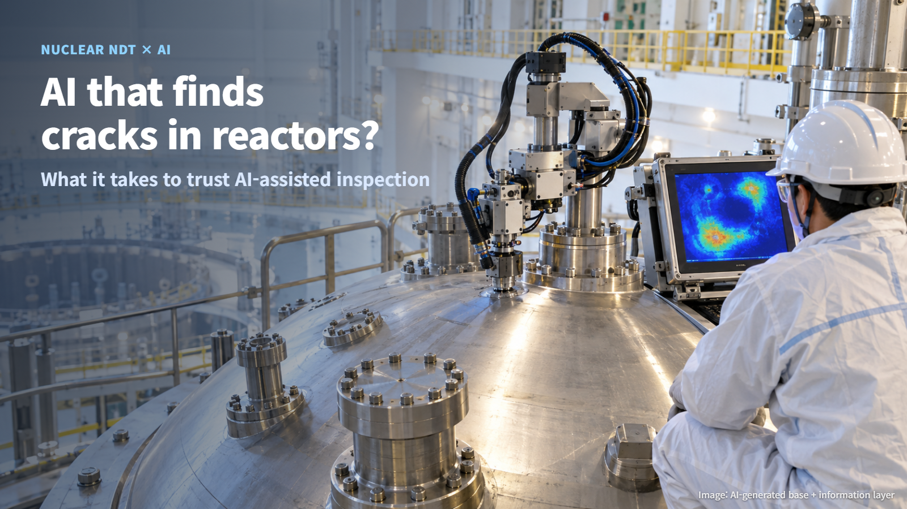
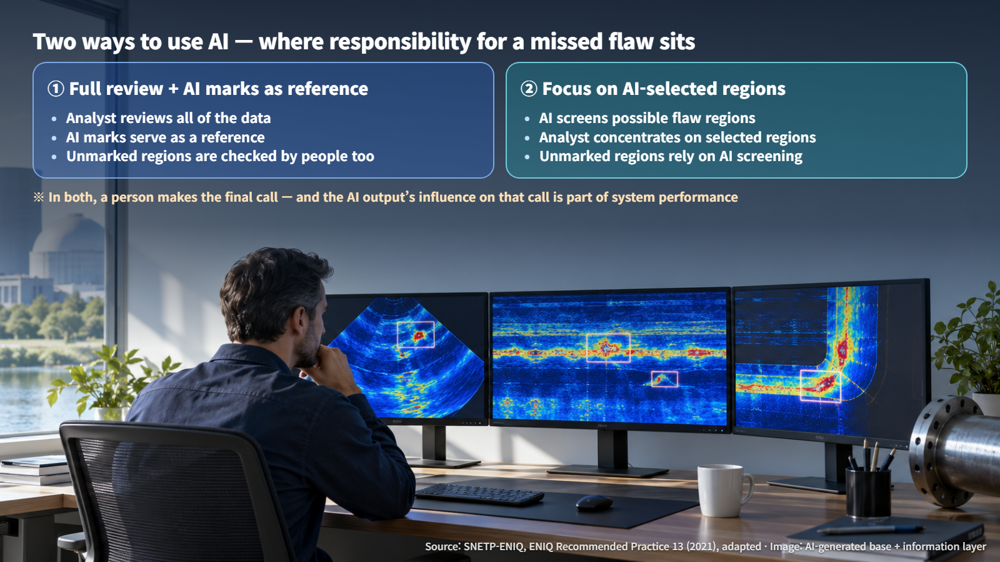
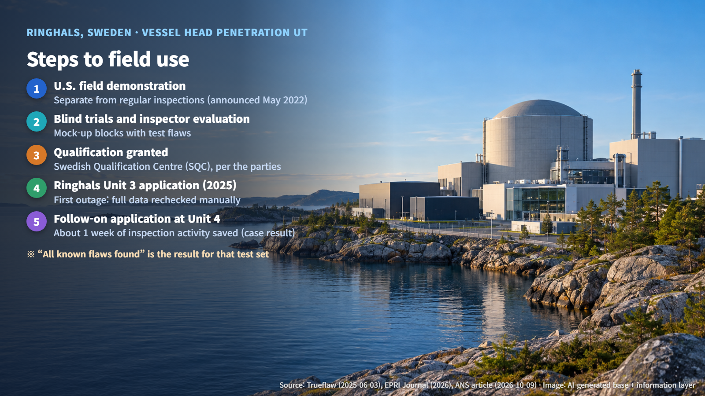
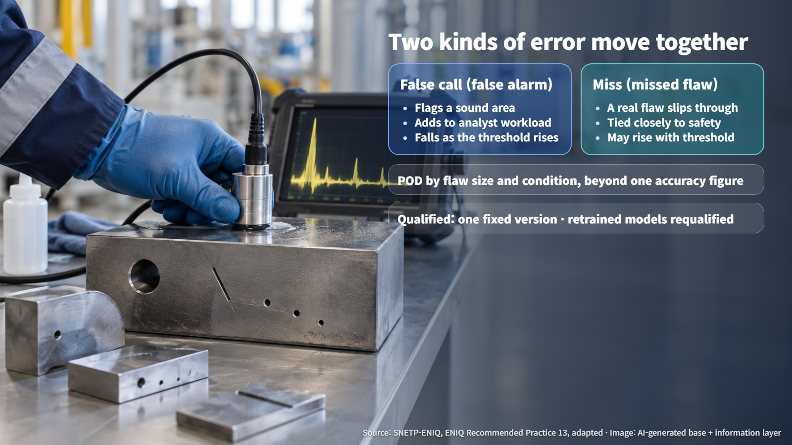

Sweden · Plant Inspection AI
AI That Finds Cracks in Nuclear Plants? What It Takes to Trust AI-Assisted Inspection
AI-assisted ultrasonic inspection earned a qualification at Ringhals in 2025; the tests, error measures and frozen model behind it show what makes such a tool trustworthy.
News that "AI can spot cracks in nuclear plant piping" tends to stir two feelings at once. There is hope that a machine will catch what people miss, and there is unease about who answers for it when the machine gets it wrong. The useful question is less whether AI is smarter than a human inspector and more what job the AI has been given, and how it has been proven to do that job well.

What AI Does in an Inspection: Finding Versus Judging
Nuclear plant equipment is checked with non-destructive testing (NDT): methods that look at the inside and surface of a component without cutting or damaging it. A common example is ultrasonic testing (UT), which sends sound waves into the metal and reads the echoes that come back. Think of it as a hospital ultrasound scan for steel.
The AI's job is to work through the signals and images the equipment has already collected, picking out and classifying the regions that might contain a flaw. Automated probe (sensor) movement and remotely operated robots are separate forms of automation; AI interpretation refers specifically to this analysis step.
Inspection also has distinct stages. Detection asks whether something is there. Characterization identifies the type and orientation of a flaw. Sizing measures its length and depth. A model that passes a detection test has demonstrated detection, and sizing performance calls for its own demonstration.
People can also work with the AI in different ways. In one approach, the analyst reviews all of the data and treats the AI's marks as a reference. In the other, the analyst concentrates on the regions the AI has selected. In the second approach, the safety of every region the AI left unmarked depends much more heavily on the AI's screening performance. Picture an inspector's eyes following the AI's highlights across the screen. Even when a person signs off on the final result, the AI's influence remains part of the outcome.

Ringhals: The First AI Analysis to Earn a "Qualification"
At the Ringhals nuclear plant in Sweden, AI analysis was used in 2025 for ultrasonic testing of the reactor vessel head penetrations, the places where tubes pass through the reactor's lid. What makes this case stand out is that the AI analysis was combined with an inspection procedure whose qualification had been confirmed. Qualification means independent confirmation that an inspection procedure reliably finds the flaws it is meant to find.
According to the parties' announcements, the system was developed by Trueflaw (Finland) and the Electric Power Research Institute (EPRI, United States), the inspection was carried out by WesDyne (Sweden), and the Swedish Qualification Centre (SQC) granted the qualification. The full text of the SQC certificate has yet to be confirmed.
EPRI describes a step-by-step path. A demonstration came first in the United States, run separately from regular inspections (announced May 19, 2022; the plant was not named). The AI then went through blind trials, in which the correct flaw locations are withheld, and inspector evaluations on mock-up test blocks containing deliberately introduced flaws. The statement that all known flaws were detected is a result for that particular test set. Field probability of detection is a separate figure, and the sample size and confidence intervals have not been disclosed.
During the first refueling outage (a planned shutdown for maintenance and inspection), analysts manually rechecked the full data set, and from the following outage onward the AI assistance was used from the start. In an ANS article, an EPRI official reported that the Ringhals Unit 3 application cut data review workload by up to 95%, and that a follow-on application at Unit 4 saved about one week of inspection activity. These are case-specific results. Algorithm processing time, analyst review time, inspection duration and total outage length are each different measures, and detection performance is evaluated separately from time saved.

What to Check Before Trusting It: Missed Flaws, False Alarms and a Frozen Model
First, the data. The training data needs to represent the materials, geometries and noise conditions found in the field, and the data used to evaluate performance needs to be kept separate from the training data. A student who sits an exam made of the practice questions will post an inflated score.
Second, the two kinds of mistakes. A false call is a "false alarm" that marks a sound area as a possible flaw; a miss is a real flaw that slips through. Lowering the sensitivity of a smoke detector reduces nuisance alarms but raises the risk of missing a real fire, and in the same way, changing an AI's threshold (the line at which it raises an alarm) moves both errors together. A low false-call rate describes false calls; misses need to be measured on their own. That is why the probability of detection (POD), the likelihood of finding a flaw under given test conditions and flaw characteristics, should be reported by flaw size and condition rather than as a single accuracy figure that lumps small and large flaws together.

Third, abnormal field input. When signals saturate or data acquisition drops out, the AI should raise a warning so the problem is flagged for review.
Fourth, a fixed ("frozen") model. What earns a qualification is a specific version of the AI. That version is locked so the same input always produces the same output, and results from retraining on field data stay outside the qualified version until they are assessed. A changed model has its impact evaluated separately and is requalified where needed.
AI Products, Field Trials and Inspection Qualification Are Different Stages
The cases vary in maturity. At Olkiluoto in Finland, Trueflaw announced a field trial in spring 2022 in which AI provided real-time assisted analysis of video of reactor vessel internals. In an interview, a Framatome representative explained that the company uses FAIA to analyze images of field welds and fuel cladding manufacturing. In South Korea, Korea Hydro & Nuclear Power (KHNP) announced that DEEP-AI obtained an EPRI qualification in 2024, and in 2025 obtained AAPDD for steam generators and BOPH-A, a qualification scheme for eddy current signal evaluation of balance-of-plant heat exchanger tubes. These cover different targets, and the detailed conditions of each approval still need to be confirmed. AVIATOR, an analysis of cooling tower concrete crack images by EDF Energy researchers, is at the research and development stage.
Recommended Practice 13 from the European Network for Inspection and Qualification (ENIQ) is a framework for assessing machine learning inspection systems through technical justification and practical trials, and national laws continue to govern how inspections are qualified. The U.S. Nuclear Regulatory Commission (NRC) review of AI regulation is a policy-level review, and individual products still need their own approval basis. Whether a qualification earned in one country applies in another is a question each country answers through its own procedures.
When you next see a headline saying "AI finds cracks," start by asking whether it describes a product launch, a field trial, or a qualification for a specific inspection. The reason to trust AI lies in the tests and procedures that proved it can do the job, more than in how clever the AI is.